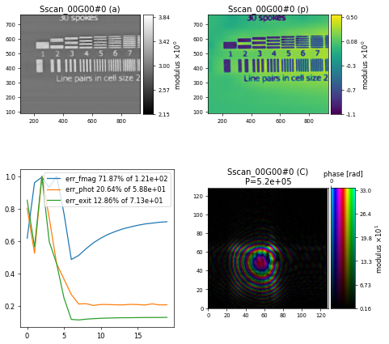

Position Refinement#
Learning how to relax the exact location of the scan positions to correct for instabilities.
Instabilities in the provided scan positions such as vibrations or drift are quite common in ptychographic experiment and ideally theses sorts of issues are taken care of experimentally by improving the stability of the scanning stage. However, this might not always be possible and very often we have to deal with data that is already compromised with position instabilities. A very common approach in those scenarios is to try and fix the issue computationally as described in this article on An annealing algorithm to correct positioning errors in ptychography. The idea basically is to check for better scan positions by minimising some error metric between the forward ptychography model and the measured intensities.
The data#
Thanks to Miguel Gomez Gonzalez (DLS) for collecting the data at the I14 instrument and the I14 team for sharing this data set for the purpose of this workshop.
In this example, we are using a test dataset that has been collected at the I14 instrument at the Diamond Light Source. The raw data has been collected with a MediPix3 detector and was stored in an HDF5/Nexus file with the following relevant entries for the intensities and scan positions
* entry/merlin_addetector/data shape = (400, 500, 512, 512)
* entry/xsp3_addetector_sum/SampleX_value_set shape = (500,)
* entry/xsp3_addetector_sum/SampleY_value_set shape = (400,)
showing that we have total of \(200 000\) diffraction frames collected in a \(400 x 500\) raster scan.
Loading the data#
To maximum reading speeds for this very large dataset, we use the "Hdf5LoaderFast" which is a modified version of the "Hdf5Loader" using multiprocessing to utilise as many CPUs as possible while reading the data
p.scans.scan_00.data = u.Param()
p.scans.scan_00.data.name = 'Hdf5LoaderFast'
p.scans.scan_00.data.orientation = 0
and load the intensities as usual
p.scans.scan_00.data.intensities = u.Param()
p.scans.scan_00.data.intensities.file = path_to_data
p.scans.scan_00.data.intensities.key = "entry/merlin_addetector/data"
together with the scan positions
p.scans.scan_00.data.positions = u.Param()
p.scans.scan_00.data.positions.file = path_to_data
p.scans.scan_00.data.positions.slow_key = "entry/xsp3_addetector_sum/SampleY_value_set"
p.scans.scan_00.data.positions.slow_multiplier = 1e-3
p.scans.scan_00.data.positions.fast_key = "entry/xsp3_addetector_sum/SampleX_value_set"
p.scans.scan_00.data.positions.fast_multiplier = 1e-3
p.scans.scan_00.data.positions.bounding_box = u.Param()
p.scans.scan_00.data.positions.bounding_box.slow_axis_bounds = [0,200]
p.scans.scan_00.data.positions.bounding_box.fast_axis_bounds = [0,250]
using the bounding_box to select a smaller sub-region of the scan. We can load the photon energy
p.scans.scan_00.data.recorded_energy = u.Param()
p.scans.scan_00.data.recorded_energy.key = "/entry/instrument/dcm_enrg/value"
p.scans.scan_00.data.recorded_energy.file = path_to_data
p.scans.scan_00.data.recorded_energy.multiplier = 1
and the detector distance
p.scans.scan_00.data.recorded_distance = u.Param()
p.scans.scan_00.data.recorded_distance.key = "/entry/instrument/detectors/excalibur_z"
p.scans.scan_00.data.recorded_distance.file = path_to_data
p.scans.scan_00.data.recorded_distance.multiplier = 0.001
directly from the file. We also specify the pixel size of the Medipix to \(55 \mathrm{\mu m}\) and tell the loader to crop a region of \(128 x 128\) pixels around a center located at (115,333)
p.scans.scan_00.data.psize = 55e-6
p.scans.scan_00.data.auto_center = False
p.scans.scan_00.data.center = (115, 333)
p.scans.scan_00.data.shape = (128,128)
Initial probe#
Unless the optics of an instrument are constantly changing, it often makes sense to use a probe from a previous reconstruction as the initial probe guess. Here, we are loading the probe from a previous I14 test scan saved in dls_i14_test_structure/scan_103937.ptyr and use it for the illumination model
p.scans.scan_00.illumination = u.Param()
p.scans.scan_00.illumination.model = "recon"
p.scans.scan_00.illumination.recon = u.Param()
p.scans.scan_00.illumination.recon.rfile = path_to_probe
p.scans.scan_00.illumination.photons = None
p.scans.scan_00.illumination.aperture = u.Param()
p.scans.scan_00.illumination.aperture.form = None
p.scans.scan_00.illumination.diversity = u.Param()
p.scans.scan_00.illumination.diversity.power = 0.1
p.scans.scan_00.illumination.diversity.noise = [0.5,0.2]
Reconstruction engine#
For reconstructing the I14 test sample, we have chosen to use the DM engine with \(\alpha=0.99\) and the following set of parameters
p.engines = u.Param()
p.engines.engine = u.Param()
p.engines.engine.name = "DM_pycuda"
p.engines.engine.numiter = 300
p.engines.engine.numiter_contiguous = 10
p.engines.engine.alpha = 0.99
p.engines.engine.probe_support = None
p.engines.engine.probe_fourier_support = None
p.engines.engine.overlap_converge_factor = 0.001
p.engines.engine.probe_update_start = 0
p.engines.engine.update_object_first = True
p.engines.engine.obj_smooth_std = 20
p.engines.engine.probe_inertia = 0.001
p.engines.engine.object_inertia = 0.001
p.engines.engine.fourier_power_bound = 0.25
p.engines.engine.record_local_error = False
which gives the following reconstruction after \(300\) iterations, showing some artefacts around the horizontal line features

Adding position refinement#
Trying to resolve some of these artefacts, we can add position refinement to the reconstruction engine, which will update the positions at an interval=10 and between the iterations start=100 and stop=200
p.engines.engine.position_refinement = u.Param()
p.engines.engine.position_refinement.method = "Annealing"
p.engines.engine.position_refinement.start = 100
p.engines.engine.position_refinement.stop = 200
p.engines.engine.position_refinement.interval = 10
p.engines.engine.position_refinement.nshifts = 8
p.engines.engine.position_refinement.amplitude = 50.0e-9
p.engines.engine.position_refinement.max_shift = 100.0e-9
p.engines.engine.position_refinement.record = False
using the position refinement method "Annealing" which randomly checks nshifts=8 positions around the current position with a radius of amplitude=50e-9 meters. The final reconstruction after \(300\) iterations shows that the artefacts on the horizontal line features are reduced
Note
The amplitude of the position refinement search needs to be provided in units of meters and carefully chosen with respect to the reconstructed pixelsize, which can be determined from P.pods[“P0000”].ob_view.psize or by checking the full logging output using verbose_level=”info”.
Exercise
Run the reconstruction with position refinement and observe the improvement on the features in the object reconstruction. Modify the position refinement parameters how it effects the outcome and performance of the reconstruction, e.g. increase/decrease the amplitude or switch to method=GridSearch which does a brute-force optimisation of all possible positions instead of the random annealing.
import ptypy, os
import ptypy.utils as u
# This will import the HDF5Loader class
ptypy.load_ptyscan_module("hdf5_loader")
# This will import the GPU engines
ptypy.load_gpu_engines("cuda")
# Root directory of tutorial data
tutorial_data_home = "../../data/"
# Path to HDF5 file with raw data
dataset = "dls_i14_test_structure/i14-112767.nxs"
# Path to a previous reconstruction
init_probe = "dls_i14_test_structure/scan_103937.ptyr"
# Path to HDF5 file with mask
mask = "dls_i14_test_structure/mask-I14-merlin-112767.h5"
# Absolute paths to HDF5 files with raw data, initial probe and mask
path_to_data = os.path.join(tutorial_data_home, dataset)
path_to_probe = os.path.join(tutorial_data_home, init_probe)
path_to_mask = os.path.join(tutorial_data_home, mask)
# Create parameter tree
p = u.Param()
# Set verbose level to info
p.verbose_level = "interactive"
# Scan label
p.run = "dls_i14_test_structure"
# Data loading and processing should
# happen in chunks of this size
p.frames_per_block = 10000
# Set io settings (no files saved)
p.io = u.Param()
p.io.rfile = None
p.io.autosave = u.Param(active=False)
p.io.interaction = u.Param(active=False)
# Live-plotting during the reconstruction
p.io.autoplot = u.Param()
p.io.autoplot.active = True
p.io.autoplot.threaded = False
p.io.autoplot.layout = "jupyter"
p.io.autoplot.interval = 10
# Define the scan model
p.scans = u.Param()
p.scans.scan_00 = u.Param()
p.scans.scan_00.name = 'BlockFull'
# Initial illumination (based on previous reconstruction)
p.scans.scan_00.illumination = u.Param()
p.scans.scan_00.illumination.model = "recon"
p.scans.scan_00.illumination.recon = u.Param()
p.scans.scan_00.illumination.recon.rfile = path_to_probe
p.scans.scan_00.illumination.photons = None
p.scans.scan_00.illumination.aperture = u.Param()
p.scans.scan_00.illumination.aperture.form = None
p.scans.scan_00.illumination.diversity = u.Param()
p.scans.scan_00.illumination.diversity.power = 0.1
p.scans.scan_00.illumination.diversity.noise = [0.5,0.2]
# Initial object
p.scans.scan_00.sample = u.Param()
p.scans.scan_00.sample.model = None
p.scans.scan_00.sample.diversity = None
p.scans.scan_00.sample.process = None
# Coherence parameters (modes)
p.scans.scan_00.coherence = u.Param()
p.scans.scan_00.coherence.num_probe_modes = 1
p.scans.scan_00.coherence.num_object_modes = 1
# Data loader
p.scans.scan_00.data = u.Param()
p.scans.scan_00.data.name = 'Hdf5LoaderFast'
p.scans.scan_00.data.orientation = 0
p.scans.scan_00.data.intensities = u.Param()
p.scans.scan_00.data.intensities.file = path_to_data
p.scans.scan_00.data.intensities.key = "entry/merlin_addetector/data"
p.scans.scan_00.data.positions = u.Param()
p.scans.scan_00.data.positions.file = path_to_data
p.scans.scan_00.data.positions.slow_key = "entry/xsp3_addetector_sum/SampleY_value_set"
p.scans.scan_00.data.positions.slow_multiplier = 1e-3
p.scans.scan_00.data.positions.fast_key = "entry/xsp3_addetector_sum/SampleX_value_set"
p.scans.scan_00.data.positions.fast_multiplier = 1e-3
p.scans.scan_00.data.positions.bounding_box = u.Param()
p.scans.scan_00.data.positions.bounding_box.slow_axis_bounds = [0,200]
p.scans.scan_00.data.positions.bounding_box.fast_axis_bounds = [0,250]
p.scans.scan_00.data.recorded_energy = u.Param()
p.scans.scan_00.data.recorded_energy.key = "/entry/instrument/dcm_enrg/value"
p.scans.scan_00.data.recorded_energy.file = path_to_data
p.scans.scan_00.data.recorded_energy.multiplier = 1
p.scans.scan_00.data.recorded_distance = u.Param()
p.scans.scan_00.data.recorded_distance.key = "/entry/instrument/detectors/excalibur_z"
p.scans.scan_00.data.recorded_distance.file = path_to_data
p.scans.scan_00.data.recorded_distance.multiplier = 0.001
p.scans.scan_00.data.mask = u.Param()
p.scans.scan_00.data.mask.file = path_to_mask
p.scans.scan_00.data.mask.key = "data/data"
p.scans.scan_00.data.psize = 55e-6
p.scans.scan_00.data.auto_center = False
p.scans.scan_00.data.center = (115, 333)
p.scans.scan_00.data.shape = (128,128)
# Reconstruct using GPU-accelerated DM
p.engines = u.Param()
p.engines.engine = u.Param()
p.engines.engine.name = "DM_pycuda"
p.engines.engine.numiter = 300
p.engines.engine.numiter_contiguous = 10
p.engines.engine.alpha = 0.99
p.engines.engine.probe_support = None
p.engines.engine.probe_fourier_support = None
p.engines.engine.overlap_converge_factor = 0.001
p.engines.engine.probe_update_start = 0
p.engines.engine.update_object_first = True
p.engines.engine.obj_smooth_std = 20
p.engines.engine.probe_inertia = 0.001
p.engines.engine.object_inertia = 0.001
p.engines.engine.fourier_power_bound = 0.25
p.engines.engine.record_local_error = False
# Position refinement
p.engines.engine.position_refinement = u.Param()
p.engines.engine.position_refinement.start = 100
p.engines.engine.position_refinement.stop = 200
p.engines.engine.position_refinement.interval = 10
p.engines.engine.position_refinement.nshifts = 8
p.engines.engine.position_refinement.amplitude = 50.0e-9
p.engines.engine.position_refinement.max_shift = 100.0e-9
p.engines.engine.position_refinement.record = False
# Run reconstruction
P = ptypy.core.Ptycho(p,level=5)